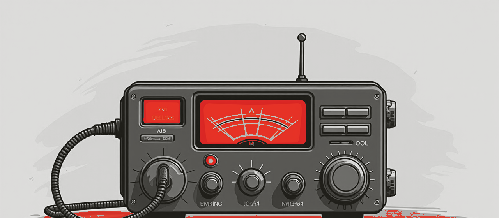

How much VRAM do you need to run an LLM?
Video memory is the real limit when you run a model locally - not clock speed. Here is the chart, the math behind it, and what to do when a model is bigger than your card.

Quick answer. A 4-bit (Q4) model needs roughly 0.6 GB of VRAM per billion parameters, plus a few GB for context. So an 8 GB card runs a 7-8B model, 12-16 GB runs 13-14B, 24 GB runs a 32B or gpt-oss-20B, and a 70B needs 48 GB+ (multiple GPUs) - or you route it to a bigger GPU over RogerAI.
If you want to run a large language model on your own machine, the first question is always the same: will it fit? The answer is almost entirely about VRAM - the memory on your GPU - because the whole model has to live there to run fast. This guide gives you the number, then the reasoning.
How much VRAM does each model size need?
At 4-bit quantization - the sweet spot most people run - here is roughly what each model class needs. Red bars are models that don't fit on a single consumer GPU.
What actually fills your VRAM?
Two things share your GPU memory. First, the weights - the model itself. At full (16-bit) precision that is ~2 GB per billion parameters; 4-bit quantization cuts it to ~0.6 GB, which is why almost everyone runs quantized. Second, the KV cache - the running memory of your conversation - which grows with context length. A long chat or a big document can add several GB, so leave headroom above the model size in the chart.
Does quantization hurt quality?
Barely, at the levels people use. Q4 (4-bit) is the popular default and keeps almost all of a model's quality while cutting memory ~4x versus 16-bit. Q5/Q6 are a touch sharper if you have the VRAM; Q8 is near-lossless but twice the memory of Q4. Below Q4 the drop-off gets real. Start at Q4, move up only if a bigger quant still fits.
Which GPU should you get for local LLMs?
- 8 GB (e.g. RTX 3060/4060) - comfortable with 7-8B models. A great, cheap start.
- 12-16 GB (4070/4060 Ti 16G) - the value sweet spot; 13-14B with room for context.
- 24 GB (3090/4090) - runs a 32B or a fast gpt-oss-20B; the enthusiast pick.
- 48 GB+ (dual 24 GB, or a pro card) - 70B-class and gpt-oss-120B quantized.
VRAM matters more than raw speed here: a card that can't fit the model spills to system RAM and crawls. See what real operators are serving, and on what hardware, on the RogerAI model directory.
What if the model is bigger than your GPU?
Three options. Quantize harder (Q4 or a smaller variant) if a little quality loss is
fine. Offload some layers to system RAM - it works but is slow. Or the one that keeps
full quality without new hardware: route the request to a bigger GPU without leaving
your workflow. roger use gpt-oss-120b gives you a local OpenAI-compatible proxy
backed by a community GPU that can fit it - with free models on the
band right now. And if you have VRAM to spare, put it on the air
with roger share. The full walkthrough is in the
operating manual.
Frequently asked questions
- How much VRAM do I need to run a 7B model?
- About 5-6 GB at 4-bit, so an 8 GB GPU runs a 7-8B model comfortably with room for context.
- How much VRAM for a 70B model?
- Roughly 42 GB at 4-bit, which is beyond a single consumer GPU. You need two 24 GB cards, a pro card, or you route the request to a bigger GPU over RogerAI.
- Is VRAM or GPU speed more important for LLMs?
- VRAM. If the model doesn't fit in video memory it spills to system RAM and runs many times slower, no matter how fast the chip is. Fit first, then speed.
- Does quantization reduce quality?
- Only slightly at the common 4-bit (Q4) level, which cuts memory about 4x versus 16-bit while keeping almost all quality. Q5/Q6 are sharper; below Q4 the loss becomes noticeable.
- Can I run a big model without a big GPU?
- Yes - offload to system RAM (slow), or keep your workflow and route to a community GPU that can fit it:
roger use <model>proxies over the same OpenAI API, free models included. - How do I calculate VRAM for a model?
- Rule of thumb at 4-bit: ~0.6 GB per billion parameters for the weights, plus a few GB for the KV cache (more for long contexts). Double the per-param figure for 8-bit.
curl -fsSL https://rogerai.fyi/install.sh | sh